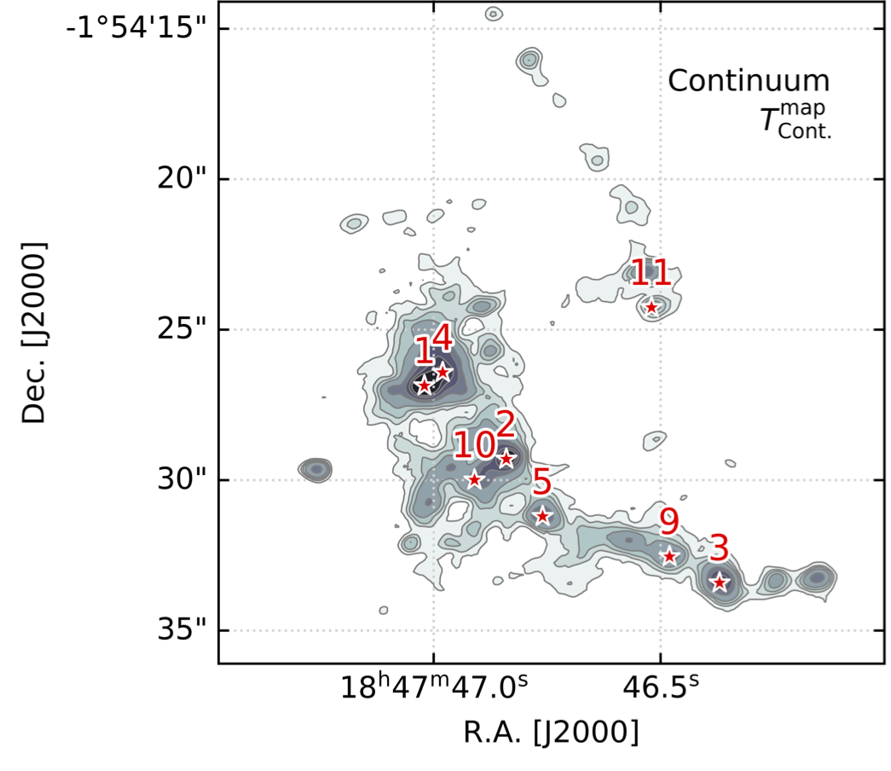

- To move slides, use the arrow keys or swipe on your mobile device
- To go to full screen, press "f"
- To print as PDF, go to this URL:
?print-pdf, then print (warning: may be slow and not work on all browsers).
- To see an overview, press esc
Hot Cores:
Sites of early feedback
with the ALMA-IMF team (incl. Timea Csengeri, Melisse Bonfand, Thomas Nony), postdoc Allison Towner, and students
Desmond Jeff, Theo Richardson, Alyssa Bulatek, Nazar Budaiev,
and Savannah Gramze
Slides available at
https://keflavich.github.io/talks/ascona2022_feedback_crs.html
Hot Cores are the sites of high-mass star formation
While the star is still accreting rapidly, before it has
contracted enough to produce ionizing radiation, it cooks
a warm, dusty envelope.
|
W51e2e $r\sim0.06$ pc $T=350$ K G+ 2017 |

|
W51e2e:
20-30 $M_\odot$ star accreting at $>10^{-4} M_\odot$ yr$^{-1}$ surrounded by $\sim300$ $M_\odot$ of fresh material
G+ 2017
Goddi+ 2020
20-30 $M_\odot$ star accreting at $>10^{-4} M_\odot$ yr$^{-1}$ surrounded by $\sim300$ $M_\odot$ of fresh material
G+ 2017
Goddi+ 2020
HCs suppress fragmentation, drive mass function higher
Jeans Mass
MJ ∝ T3/2 ρ−1/2
ALMA-IMF: $\sim800$ cores

Pouteau+ 2022 W43-MM2/3
ALMA-IMF:

Top-heavier IMFs are seen in high-mass clusters,

ALMA-IMF:
The CMF is shallow (top-heavy) in HMSFRs
Top-heavier IMFs are seen in high-mass clusters,
CMFs in protoclusters

Hot cores in ALMA-IMF: From rare objects to a population ($\sim50$)

Cores with line forests
TD>50 K
TG ≳100K
TD>50 K
TG ≳100K
Brouillet+, resubmitted
Bonfand+: CH3OCHO HC catalog ($T\gtrsim100$ K)
Many lines of CH3OCHO toward W51-E2


 Desmond Jeff:
Desmond Jeff:
Ten hot cores in Sgr B2 DS
TG ~ 200-500 K
M ~ 200 - 2900 M⊙


 Levy+ 2021
Levy+ 2021

Hot cores are generally the most massive cores
Hot cores are mostly small ($\lesssim5000$ AU)
HCs are the centers of protoclusters
where $F_{grav} > F_{feedback}$
W51-E |
|
HCs are the centers of protoclusters
where $F_{grav} > F_{feedback}$
W51-IRS2 |

|
Hot cores are more prevalent in the Galactic center
$\sim 10^{-5}$ kpc$^{-2}$ in the disk, $\sim10^{-3}$ kpc$^{-2}$ in the CMZ
Desmond Jeff:
Ten hot cores in Sgr B2 DS
TG ~ 200-500 K
M ~ 200 - 2900 M⊙
Hot cores in the CMZ are a bit hotter and more massive
Summary:
- IR feedback from HMYSOs heats gas
- The CMF (and IMF?) appear shallower in HMSFRs
- Hot cores likely affect the CMF locally, driving up the average mass
- IR feedback has little dynamical effect; it does not halt accretion
Aside about HII regions
Related to Shyam Menon's and Grace Olivier's talks:- HII regions are optically thin in the near-IR, so IR trapping is ineffective
- Hot cores are very optically thick ($\Sigma \gtrsim 1$ g cm$^{-2}$) but also massive and gravitationally dominated
The proto-Super Star Cluster Sgr B2 is forming in the CMZ
Sgr B2 N is rapidly accreting...
...and driving a powerful outflow
Schwörer+ 2021 (subm.)
Ṁ(out) =0.044 M⊙ yr -1
SSCs in starbursts drive outflow
NGC 253 protoclusters (Leroy+2018)
NGC 4945 protoclusters (Emig+2020)
Levy+ 2021